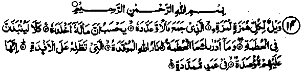
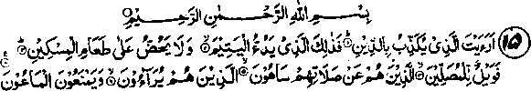

Chapter Two · Section (a): Ayaat on warning against miserliness and hoarding
4. The story of the miserly owners of a garden
12. We have tried them (Makkans) as We tried the owners of the garden when they vowed they would pluck its fruit next morning; and made no exception (for the will of Allah). Then a visitation came upon it while they slept; and in the morning it was as if plucked. And they cried out to one another in the morning, saying, ‘Run early to your field if you wish to pluck (the fruit)’. So they went off, saying to one another in low tones, ‘No needy person shall enter it today against you.’ They went early, being sure (to reap the whole themselves). But when they saw it, they said/We are at the wrong place’ (but when they realised they said), ‘Nay, we are in misfortune.’ The best among them said: Did I not tell you (not to be ill-thinkers; to give to the poor brings blessings). Why do you not glorify Allah? They said: ‘Glorified be our Lord! (Assuredly) we have been wrong-doers’. Then some of them blamed each other. (Later they said) ‘Alas for us! We were all outrageous. It may be that our Lord will give us better than this in place thereof. We beseech our Lord (for his forgiveness’). Such was the punishment. And verily the punishment of the Akhirah is greater, if they did but know". (al-Qalam: 17-33) .
Note: The story contained in these Ayaat is a severe admonition to the people who make a vow of not helping the poor and needy, of not a penny or a piece of bread to he given to them, thinking they do not deserve any help and it is useless to give alms to them. Such people lose their possessions all of a sudden in this manner. Some among them, being good hearted, do not like that attitude. But, out of regard others’ feelings, they join with them. They shall not escape the calamity, which befalls all of them alike.
Abdullah Ibne Abbas Radhiallaho anho has said that the above incident happened to a certain people of Habshah (Ethiopia). Their father had a very big garden, from which he used to give Sadaqah to the beggars. When he died, his children said that the old man was a fool, as he gkve away almost everything to other people. So they made a vow and said that they would bring the whole harvest from the garden to their homes and not give anything to the beggars. Qatadah Rahmatullah alaihe said that the previous owner of the garden, the old man, as a rule, kept back as much as he needed for a year and spent what remained as Sadaqah. His sons tried to stop him from doing that, but he did not listen to them. After his death the sons did what has been described in these Ayaat; they intended to keep everything for themselves and not to give anything to the poor. Sa‘eed Ibne Jubair Rahmatullah alaihe has said that the garden was in Yemen, at a place called ‘Zarwan’, about six miles outside the famous city of San’aa. Mujahid Rahmatullah alaihe has said that it was a vineyard. Ibne Juraij Rahmatullah alaihe has said that the calamity that fell on that garden was a fire, which came out of a valley in Jahannam and spread over the whole garden.
Abdullah Ibne Mas'ud Radhiallaho anho has quoted Rasulullah Sallallaho alaihe wasallam as saying, "Guard yourselves against sins. A man commits such sins as would create evil effects, causing loss of a part of his knowledge (loss of memory), so that he is unable to remember what has been learnt; some sins lead to failure to observe Tahajjud Salaat (at night) and, owing to some other sins, one is deprived of the income he was destined to receive." Then Rasulullah Sallallaho alaihe wasallam recited the Ayat:
And a visitation came upon it from thy Lord...........
And said that these people were deprived of the harvest of their garden because of their sin." Allah Ta'ala says in another place in The calamity that befalls you is due to your own actions; (it does not follow every bad action), most of which are overlooked and for-given by Allah Ta'ala. (ash-Shuraa: 30)
Ali Radhiallaho anho says that he was told by Rasulullah Sallallaho alaihe wasallam, "O Ali, I explain to you this Ayat: "whatever you suffer from, be it an ailment, a worldly loss in this life, or a calamity, all are the results of your own doings". This subject has been fully dealt with in another publication of the author called (al-Itidaal), which may be consulted.
13. But as for him who is given his record in his left hand, he will say: Oh, would that I had not been given my book and knew not what my reckoning was! Oh, would that it had been death! My wealth has not availed me, my power has gone from me. (It will be said): Take him and fetter him and then expose him" to hell-fire, and then insert him in a chifin whereof the length is seventy cubits. Lo! he used not to believe in Allah, the Tremendous and urged not the feeding of the destitute. Therefore, he has no friend here this day, nor any food save filth, which none but sinners eat. (al-Haaqah: 25-37)
Note: The word’ Ghisleen’ (filth) in the second last Ayat given above, is commonly translated as ‘Filthy fluid’ collected from the washing of wounds, etc. Ibne Abbas Radhiallaho anho says that the pus and blood which oozes from the wounds is called Ghisleen. Abu Sa'eed Khudri Radhiallaho anho has quoted Rasulullah Sallallaho alaihe wasallam as saying that, if a pail full of Ghisleen is thrown on to this ‘earth, its stench will make everything rotten and foulsmelling. Nauf Shami Rahmatullah alaihe has said that the chain will be seventy yards long, each yard will be of seventy measures, each of which will be as long as the distance between Makkah and Kufah. Ibne Abbas Radhiallaho anho and some other interpreters of the Holy Qur’an have said, "The chain whereof the length is seventy cubits will be entered into their bodies at their posterior and taken out from their noses; then it wi" be bound together and wrapped upon them tightly". The Ayat under reference describes the wrath of Allah befalling those who discourage others to feed the poor. Therefore one should always encourage one’s friends, relatives and all acquiantances to help the poor and the needy, as urging others to spend is bound to reduce miserliness in oneself.

In the name of Allah, the Beniflcient, the Merciful
14. Woe unto every slandering traducer who has gathered wealth (of this world) and keeps counting it. He thinks that his wealth will render him immortal. Nay, but verily he will be flung into the Consuming one (Hellfire) Ah! what will convey to you what the Consuming one is! (It is) the Fire of Allah, kindled, which leaps up over the hearts (of men). Lo! It is closed in upon them, in outstretched columns, (al-Humazah: 1-9)
Note: There are various explanations by different Ulama of ‘humazah and lumazah’,the words in the first Ayat here. Ibne Abbas Radhiallaho anho and Mujahid Rahmatullah alaihe have said, "Humazah means one who taunts, whereas ‘Lumazah’ means backbiter". Ibne-e-Juraij Rahmatullah alaihe has said, "Humazah is a taunting indication by hand, face and eyes, whichever is used, while Lumazah is done by words of mouth."
Once Rasulullah Sallallaho Alaihe wasallam described some events of his Ascension (Mi'raaj) and said that he saw a group of men whose bodies were being cut up with scissors. When he asked Jibra’il Alaihissalaam as to who those people were, he replied, They are those who used to adorn themselves for committing adultery”. Then he saw a well from which a stinking smell came out and he heard shrieks coming out of the well. He asked Jibra’il Alaihissalaam about that, who replied that these were those women who used td'beautiiy themselves (for adultery) and do other wrong things. He then saw some men and women hung up by their breasts and enquired about them. Jibra’il Alaihissalaam told him that they were those who used to do back-biting and reproached and taunted others.
May Allah Ta’ala save us from these evils, as they involve terrible punishments. The above Surah censures the evils of miserliness and greed by saying that one amasses wealth due to miserliness and satisfies his greed by counting it over and over again, to make sure that it has not become less. He loves his wealth and enjoys counting it. This bad habit leads one to become arrogant and boastful, which creates in him the evils of back-biting and taunting. That is why the Surah opens with admonition against these vices and severely censures such evil habits. It is a pity that everyone these days is a victim of the mania that wealth will save him from disasters and calamities, as though death will not come to the rich. That is why a severe warning has been administered here. Events, in general, support the truth that,when a calamity befalls someone, all his wealth and property is of no avail; rather, the excess of wealth atti-acts adversities. Someone may think of poisoning a rich person or murdering Jiim. Robbery, theft and other such mishaps always remain a worry for the wealthy. Above all, the relatives, even wife and children, eagerly await the time when the rich old man will die, so that the wealth falls into their hands.

In the name of Allah, the Benificient, the Merciful